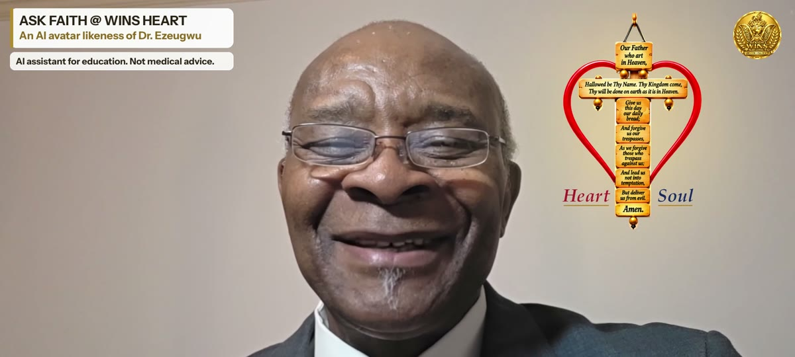

EZEUGWU GLOBAL GATEWAY
The Gateway to EZEUGWU WINS (Heart and Soul) AI™
One gateway. Two missions. A global network.
Protect my heart and soul
Two missions
Protecting the Heart. Teaching Faith for the Soul.
WINS Heart
Educate → Identify Risk → Prevent → Navigate to Care
- Quick WINS: avatar video with captions
- Learn more: plain-language written lesson
- Go deeper: written, with Listen
WINS Soul
Receive → Align → Abide → Pinnacle
- The four Concept Books as primary architecture
- Grace, Free Will, Free Choice, Alignment, Redemption, Salvation, Righteousness
How WINS works
Three simple steps
Choose your path
Heart and Soul together, Soul only, or Heart only.
Learn in small steps
Short Quick WINS videos, plain-language lessons, and answers from the AI avatar.
Live it every day
Your My Happy Life Care Plan gives you one step at a time.

Ezeugwu WINS Heart and Soul. An AI avatar likeness of Dr. EzeugwuAI assistant for education. Not medical advice.Meet FAITH, the WINS AI avatar
Hello, my friend. My name is FAITH. Welcome to WINS.
"I'm an AI avatar of Dr. Ezeugwu. I am built for your heart and soul journey: health education, disease prevention and Faith."
The avatar is an AI likeness of Dr. Ezeugwu, created and approved by him for educational purposes.
Start WINS freeThe global network
Pathways from the Gateway
The Concept Book Theological Series
Four Books. One Journey. Receive → Align → Abide → Pinnacle in God.
See the books →Just Heart
Care-navigation destination only, in Maryland. Does not operate WINS.
You are leaving EZEUGWU WINS for the Just Heart Cardiovascular Group website. Nothing from this conversation is shared. Just Heart is Dr. Ezeugwu's medical practice, and appointments are made through its own secure system.
Visit Just Heart →Global and heritage sites
GABP, the Global Association of Benevolent Practitioners, and our heritage site, the Lejja Iron Smelting Site in Nsukka (LISSIN).
See the Global Network →Join WINS CORPS
Free education. Informed choices. Healthier living.
Join WINS CORPS, free